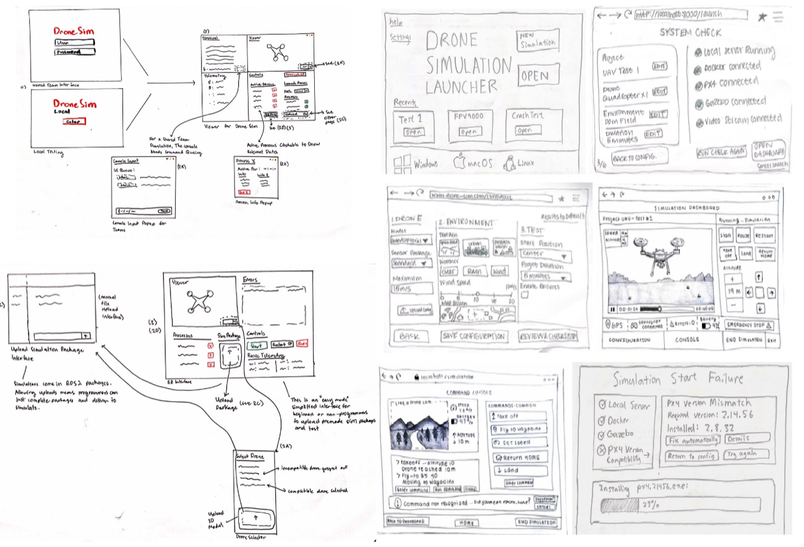
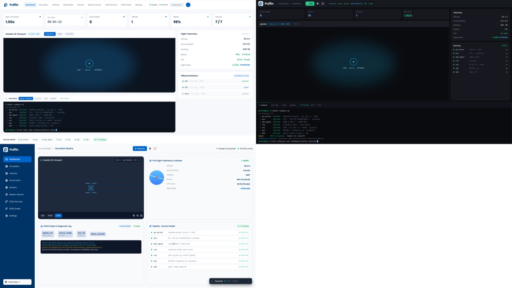
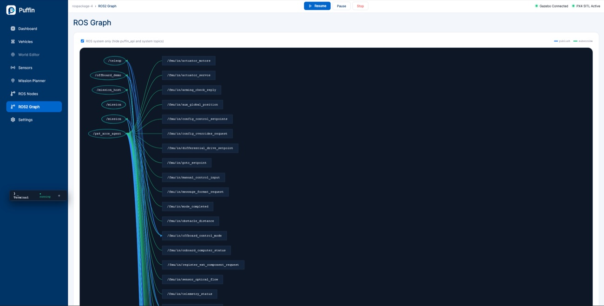
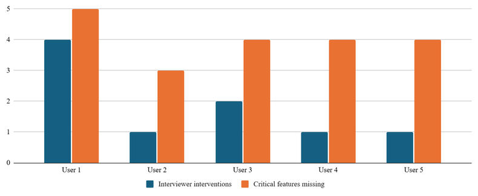
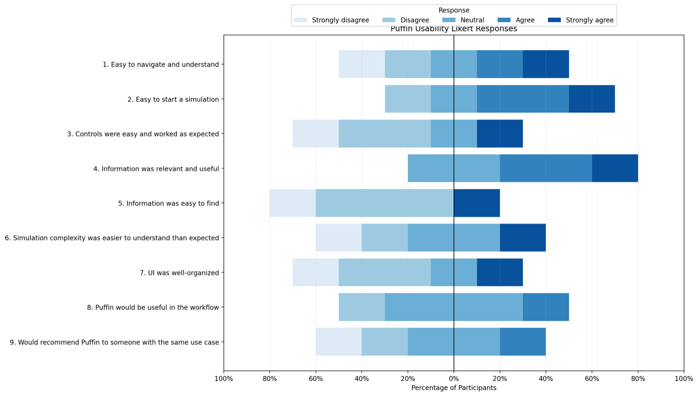

Case Study · Class Project
Puffin
Making drone simulation workflows more approachable through a browser-based control panel. A CS160 team project consolidating PX4, Gazebo, and ROS 2 setup, monitoring, and control into one dashboard.
Overview
The Problem
Running a drone simulation meant specialized knowledge of PX4, Gazebo, and ROS 2 spread across multiple repositories, Docker services, and command-line tools — a fragmented, Linux-oriented workflow that made onboarding a recurring burden for technical leads and blocked non-programming teammates from testing independently.
Who It Serves
Programming leads tired of repeat onboarding, mechanical/aerospace teammates who could design a test but not run one, and FPV pilots and builders with a wide range of technical depth.
The Response
Puffin, a browser-based dashboard placed in front of the existing simulation stack — one interface for simulation startup, process health, visualization, telemetry, vehicle controls, ROS information, and terminal access.
Needfinding
We ran four interview and observation sessions with people who had different relationships to drones and simulation. All names are pseudonyms.
Glen
UAV Club Programming Lead
Walked us through a Gazebo/PX4/Docker/VNC setup with no clear signal of progress or readiness — onboarding fell repeatedly on him.
Greg
Club President, Aerospace
Mechanical and aerospace teammates could design meaningful tests but stayed dependent on programmers to run and interpret them.
Haskell
Aerial Photographer, FPV Pilot
Showed that users skip relevant steps when the information they need is inconvenient to access.
Britt
FPV Pilot, Drone Builder
Described simulators that assumed substantial prior knowledge, reinforcing that capability isn't enough without legible system state.
- Requirements we translated the research into
- Visible entry point (start without knowing every repo), legible system state (readiness, health, telemetry, actions), centralized investigation (controls and diagnostics in one place), and layered technical depth (support beginners without hiding what developers need).
Ideation
First-draft concepts ranged from a cross-platform launcher to natural-language controls to a physical behavior-card library. We narrowed to three, then selected one.
Consolidated Dashboard
Directly addressed the multi-repository and dependency issue, reached the broadest user group, and stayed easy to update and extend.
Mobile Pre-Flight Checklist
Solved the pre-flight problem but lacked technical complexity and didn't address our most pressing needfinding insight.
Behavior Library + Physical Cards
A tangible card-and-QR-code system that lacked technical specificity and adaptability.
Paper Prototypes
Prototype 1 — Dashboard-First
Visible controls and simple status updates designed to feel approachable.
Prototype 2 — Terminal-Forward
Package upload and process information, closer to existing robotics tools.

- Testing with three participant types
- Programmer valued cross-platform access and technical visibility, wanted more logging and control granularity, slightly preferred Prototype 2. Builder valued direct controls and natural-language information, preferred Prototype 1. Beginner found Prototype 1 approachable but overwhelming in options, and Prototype 2's terminal unfamiliar without intuitive cues.
- Key finding
- Accessibility and technical depth aren't mutually exclusive. The next version combined Prototype 1's approachable dashboard with Prototype 2's logs, process visibility, and deeper controls.
High-Fidelity Iteration
Design 1
Dense service health, telemetry, mission progress, and terminal — strong visibility, but competing top-level elements and heavy reliance on raw commands.
Design 2
Run/Pause/Stop next to simulation status improved the state-to-action link, but the viewport stayed weak and terminal control raised error-prevention concerns.
Design 3
A modular, light dashboard with familiar sidebar navigation — the most approachable structure, though labels needed explanation and color carried too much status meaning.

We selected Design 3 as the foundation, then folded in Design 2's explicit controls and Design 1's technical detail. External critique reinforced this: one participant valued the ROS 2 graph for making node/topic relationships visible, the other valued a single place to check service health — both cases where users wanted Puffin to explain how the system's parts relate.
Final Design & Build
Puffin runs in three stages: enter through the launcher and check whether required processes are active (Start/Stop/Reset); monitor the drone through the viewport, telemetry, process state, flight mode, and arming state, with Arm/Takeoff/Land/Disarm controls and physical-controller support; and, if something goes wrong, inspect implicated processes without leaving the app. The Dashboard, ROS2 Services, ROS2 Graph, and a WebSocket-connected floating terminal cover simulation state, lifecycle control, node/topic visualization, and lower-level access respectively. The implemented offboard demo flies a 10m square via a ROS 2 lifecycle node through PX4 offboard setpoints.


Usability Evaluation
Five moderated think-aloud sessions asked participants to start the simulation and confirm readiness, monitor an autonomous square flight and land the drone, then investigate and recover from a stopped simulation.


Readiness was visible but not decisive
Users paused to determine whether the simulation, connection, or required services were active.
Implication: one system-health summary connecting Gazebo, PX4 SITL, telemetry, process health, and blocking prerequisites to a clear readiness state.
Control prerequisites were insufficiently explained
One user couldn't locate takeoff; another didn't realize teleop mode and arming came first.
Implication: present readiness, mode selection, arming, and takeoff as an ordered pre-flight sequence; disabled controls should explain what's missing.
Technical information was useful but fragmented
Experienced users valued the ROS Nodes and Graph pages; newer users didn't understand their purpose.
Implication: preserve detailed views, but add plain-language explanations and group related spatial/status information.
Failure detection didn't produce recovery
One user hit an unrecoverable viewport state with no reset control; warnings didn't explain what to do next.
Implication: pair warnings with cause and a recommended action; add an in-app reset/reconnect path.
Experience level changed what users needed
Newer users wanted onboarding and tooltips; experienced users wanted joystick control and more configurable telemetry.
Implication: progressive disclosure — clear defaults for readiness/next-action/recovery, expandable depth for experienced users.
What's Next
Four priorities should precede any broader feature expansion — they most directly close the task-completion and independent-recovery gaps this evaluation found:
Further out: